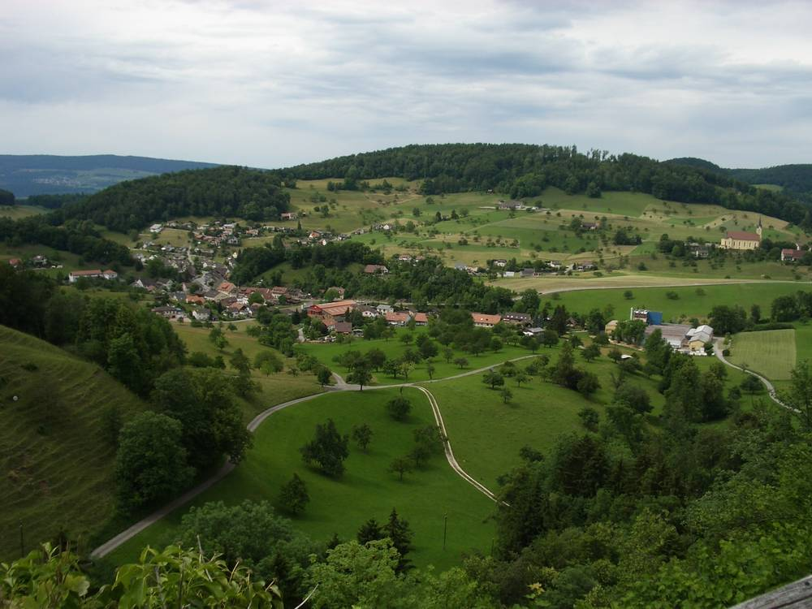

스위스 출빌 주민, 마을 태양광 전기 나눠 쓰는 '지역에너지공동체' 결성 나서…11월 15일까지 설문, 2027년 4월 출범 목표

올해 초 법으로 가능해진 LEG, 마을엔 태양광 설비 30곳…이웃 루프싱겐은 70명으로 첫 공동체 꾸려 경험 나눠
스위스 졸로투른주 출빌(Zullwil)에서 한 주민이 마을 안에서 만든 태양광 전기를 이웃끼리 나눠 쓰는 '지역에너지공동체(LEG)'를 꾸리려고 나섰다. 자기 집 지붕 태양광으로 민박과 전기차, 열펌프에 쓸 전기를 만들고 있는 스바네테 벨카(Svanette Belka) 씨는 마을 모든 가구에 안내문을 돌리고 11월 15일까지 참여 의사를 묻는 설문을 받고 있다. 스위스에서는 2026년 초부터 LEG가 법으로 가능해져 태양광을 단 집이 남는 전기를 다른 참여자에게 팔 수 있고, 계량과 전력망 사용, 모자라는 전기 공급은 공동체 안에서도 지역 전력회사 프리메오 에네르기(Primeo Energie)가 맡는다. 벨카 씨는 마을에 이미 태양광 설비가 30곳 있다며 되도록 많은 주민의 참여를 바랐고, 이웃 마을 루프싱겐(Lupsingen)에서 올해 초 70명으로 첫 LEG가 출범할 때 쓰인 앱을 만든 주민과 의견을 나누며 계약·신고 절차를 준비하고 있다. 벨카 씨는 관심 있는 사람이 충분히 모이면 연말 전에 프리메오에 사업을 내고 2027년 4월 출빌 LEG를 시작할 수 있다고 말했다. 참여 규모와 전기 요금 수준은 아직 알려지지 않았다.
시민에너지 관점
태양광 설비가 이미 30곳 있는 마을에서 이웃끼리 전기를 사고팔 수 있게 되면, 지붕마다 흩어진 설비가 하나의 마을 발전소처럼 움직이게 된다. 독일 남서부 쇤아우에서도 체르노빌 사고 뒤 몇몇 주민이 시작한 모임이 두 차례 주민투표를 거쳐 1997년 마을 배전망을 넘겨받았고, 그 주민 회사는 지금 전국에 재생에너지 전기를 공급하는 협동조합으로 자랐다. 한 사람의 열의로 시작한 일이 얼마나 가겠느냐는 시각도 있겠지만, 제도가 문을 열어 두고 앞선 마을이 경험을 나누면 작은 시작이 마을 전체의 일이 된다. 국내에서도 이웃 사이 전력 거래를 가로막는 규제를 풀어 주민이 스스로 마을 에너지공동체를 꾸릴 길을 열어야 한다.
출처: Wochenblatt (Schwarzbubenland-Laufental) 2026-11-05 기자 미표기 원문 보기
スイス・ツルヴィルの住民、村の太陽光の電気を分け合う「地域エネルギー共同体」づくりに乗り出す…11月15日までアンケート、2027年4月の発足目指す
今年初めに法的に可能になったLEG、村には太陽光設備30カ所…隣村ルプジンゲンは70人で最初の共同体を立ち上げ経験を共有
スイス・ゾロトゥルン州のツルヴィル（Zullwil）で、一人の住民が、村の中でつくった太陽光の電気を隣人同士で分け合う「地域エネルギー共同体（LEG）」づくりに乗り出した。自宅屋根の太陽光で民宿や電気自動車、ヒートポンプに使う電気をつくっているスヴァネッテ・ベルカ（Svanette Belka）さんは、村のすべての世帯に案内文を配り、11月15日まで参加の意向を尋ねるアンケートを行っている。スイスでは2026年初めからLEGが法的に可能になり、太陽光を設置した家は余った電気をほかの参加者に売ることができ、計量や送配電網の利用、不足分の電力供給は共同体の中でも地域の電力会社プリメオ・エネルギー（Primeo Energie）が担う。ベルカさんは村にはすでに太陽光設備が30カ所あるとして、できるだけ多くの住民の参加を呼びかけている。隣村ルプジンゲン（Lupsingen）で今年初めに70人で最初のLEGが発足した際に使われたアプリを開発した住民と意見を交わしながら、契約や届け出の手続きを準備している。ベルカさんは、関心を持つ人が十分に集まれば年内にプリメオに事業を申請し、2027年4月にツルヴィルのLEGを始められると話した。参加規模や電気料金の水準はまだ明らかになっていない。
市民エネルギーの視点
すでに太陽光設備が30カ所ある村で隣人同士が電気を売り買いできるようになれば、屋根ごとに散らばった設備が一つの村の発電所のように動くことになる。ドイツ南西部のシェーナウでも、チェルノブイリ事故の後に数人の住民が始めた集まりが2度の住民投票を経て1997年に町の配電網を引き継ぎ、その住民の会社は今では全国に再生可能エネルギーの電気を供給する協同組合に成長した。一人の熱意で始まったことがどこまで続くのかという見方もあろうが、制度が門戸を開き、先行する村が経験を分かち合えば、小さな始まりが村全体の取り組みになる。韓国でも隣人間の電力取引を阻む規制を緩め、住民が自ら村のエネルギー共同体をつくれる道を開くべきだ。
出典: Wochenblatt (Schwarzbubenland-Laufental)（ヴォッヘンブラット） 2026-11-05 記者表記なし 原文を読む
瑞士楚尔维尔居民着手组建共享村内太阳能电力的"本地能源社区"…11月15日前开展问卷，目标2027年4月启动
今年初起依法可设立LEG，村里已有30处太阳能设施…邻村卢普辛根已有70人组成首个社区并分享经验
在瑞士索洛图恩州的楚尔维尔（Zullwil），一位居民着手组建让邻里共享村内太阳能电力的"本地能源社区（LEG）"。用自家屋顶太阳能为民宿、电动汽车和热泵发电的斯瓦内特·贝尔卡（Svanette Belka）向全村每户分发了说明信，并在11月15日前开展问卷，征询参与意向。瑞士自2026年初起依法可以设立LEG，装有太阳能的住户可以把多余电力卖给其他参与者，而计量、电网使用和不足电力的供应，在社区内仍由当地电力公司普里梅奥能源（Primeo Energie）负责。贝尔卡表示村里已有30处太阳能设施，希望尽可能多的居民参与；她正与邻村卢普辛根（Lupsingen）一位居民交流——今年初该村以70人成立首个LEG时用的应用程序就是他开发的——一起准备合同和申报手续。贝尔卡说，如果有足够多的人感兴趣，就能在年底前向普里梅奥提交项目，并于2027年4月启动楚尔维尔LEG。参与规模和电价水平尚未公布。
市民能源视角
在已有30处太阳能设施的村子里，如果邻里之间可以买卖电力，分散在各家屋顶的设施就会像一座村级电站那样运转。在德国西南部的舍瑙，切尔诺贝利事故后由几位居民发起的团体经过两次居民投票，于1997年接手了镇上的配电网，这家居民公司如今已成长为向全国供应可再生电力的合作社。也许有人怀疑凭一个人的热情能走多远，但只要制度敞开大门、先行的村子分享经验，小小的开端就会变成全村的事业。韩国也应放宽阻碍邻里电力交易的规制，为居民自己组建村级能源社区开辟道路。
来源: Wochenblatt (Schwarzbubenland-Laufental)（周报） 2026-11-05 未署名 查看原文
Resident of Swiss village Zullwil sets out to form a local energy community sharing village solar power, with a survey until 15 November and an April 2027 start in view
LEGs became legal at the start of this year; the village already has 30 solar installations, and neighbouring Lupsingen, which formed its first community with 70 members, is sharing its experience
A resident of Zullwil in the Swiss canton of Solothurn has set out to form a local energy community (LEG) in which neighbours share solar electricity produced within the village. Svanette Belka, whose rooftop solar panels power her bed and breakfast, electric car and heat pump, has sent a circular to every household in the village and is running a survey of interest until 15 November. Since the start of 2026, LEGs have been legal in Switzerland, allowing homes with solar panels to sell surplus power to other members, while the regional utility Primeo Energie remains responsible for metering, grid use and supplying the remaining electricity within the community. Belka says the village already has 30 solar installations and hopes as many residents as possible will join; she is preparing contracts and registrations in contact with a resident of neighbouring Lupsingen who developed the app used when that village launched its first LEG with 70 members earlier this year. If enough people are interested, she said, the project can be submitted to Primeo before the end of the year and the Zullwil LEG could start in April 2027. The number of participants and the electricity price have not yet been set out.
Citizen Energy View
In a village that already has 30 solar installations, letting neighbours buy and sell power from each other turns panels scattered across rooftops into something like a single village power station. In Schönau in south-western Germany, a group started by a handful of residents after the Chernobyl disaster won two local referendums and took over the town's distribution grid in 1997, and that residents' company has since grown into a co-operative supplying renewable electricity across the country. Some may doubt how far one person's enthusiasm can go, but when the law opens the door and villages that went first share what they learned, a small start becomes the whole village's project. Korea, too, should ease the rules that block electricity trading between neighbours and open the way for residents to build their own village energy communities.
Source: Wochenblatt (Schwarzbubenland-Laufental) 2026-11-05 No byline Read the original